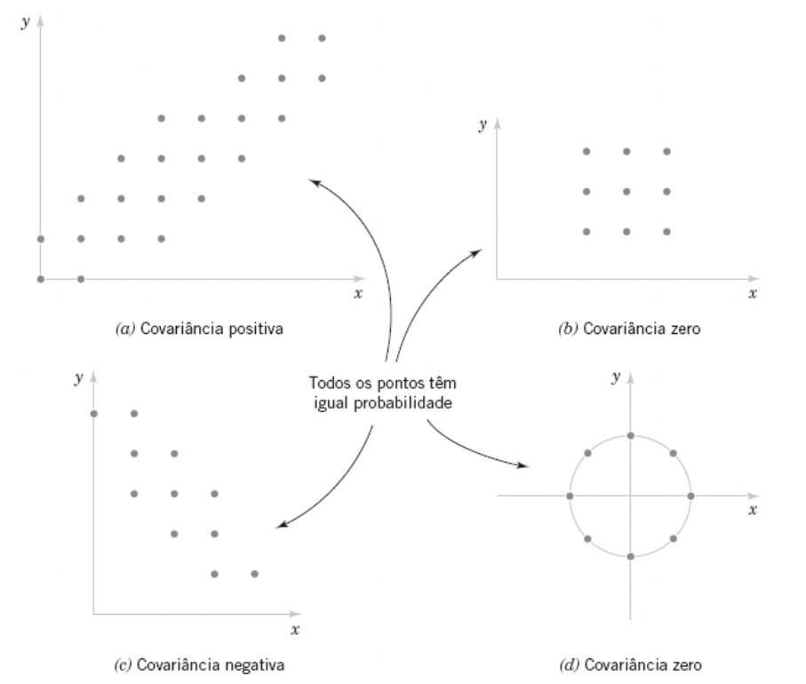

Duas variáveis, uma superfície de probabilidade
Quando um experimento produz duas medidas ao mesmo tempo, a densidade deixa de ser uma curva e vira uma superfície. Probabilidade passa a ser volume, e a relação entre as variáveis entra na conta.
Mais de uma variável no mesmo experimento
Até aqui, uma variável aleatória por vezEstudamos até então distribuições de probabilidade para uma única variável aleatória. É frequentemente útil ter mais de uma variável aleatória definida no mesmo experimento aleatório.
X é o comprimento de uma dimensão da peça e Y o de outra. Queremos a chance de a peça vir com X entre 2,95 e 3,05 mm e Y entre 7,60 e 7,80 mm:
A região pode ter qualquer formato: uma condição como x < y, um disco, ou uma função de restrição (constraint) qualquer. O exemplo a seguir já nasce com uma restrição dessas.
O exemplo que vai nos acompanhar: o servidor
Sua máquina pede acesso a um servidor. Seja X o tempo (em ms) até o servidor conectar e Y o tempo (em ms) até ele autorizar você como usuário válido. Os dois relógios disparam no mesmo instante, e a autorização só acontece depois da conexão: X < Y.
Cada conceito novo desta aula vai ser testado nele: é uma densidade válida? Qual a chance de conectar em até 1 s e autorizar em até 2 s? Quanto tempo se espera pela autorização? Saber que já conectou muda essa espera? X e Y são independentes?
Os pontos sorteados na abertura são pares (x, y) desse modelo. Todos caem acima da diagonal: a restrição x < y é uma região R não retangular.
Função de probabilidade conjunta
O caso discreto: uma tabela de duas entradasA função de probabilidade conjunta das variáveis aleatórias discretas X e Y, denotada por fXY(x, y), satisfaz
- fXY(x, y) ≥ 0
- ∑x ∑y fXY(x, y) = 1
- fXY(x, y) = P(X = x, Y = y)
As mesmas três condições da aula 02, agora com dois índices. A vírgula em P(X = x, Y = y) é um “e”: a interseção dos dois eventos.
O servidor visto num relógio grosseiro
Suponha que só dá para ler o relógio em blocos de 500 ms. Sejam X̃ e Ỹ o número de blocos completos até conectar e até autorizar (com “3+” para 1500 ms ou mais). Agora as variáveis são discretas, e a distribuição conjunta cabe numa tabela:
| x̃ \ ỹ | 0 | 1 | 2 | 3+ | soma da linha |
|---|---|---|---|---|---|
| 0 | 0,3426 | 0,2745 | 0,1010 | 0,0588 | 0,7769 |
| 1 | 0 | 0,0764 | 0,0612 | 0,0356 | 0,1733 |
| 2 | 0 | 0 | 0,0171 | 0,0216 | 0,0387 |
| 3+ | 0 | 0 | 0 | 0,0111 | 0,0111 |
| soma da coluna | 0,3426 | 0,3509 | 0,1793 | 0,1271 | 1 |
Cada célula é P(X̃ = x̃, Ỹ = ỹ); a cor é proporcional a ela. As condições valem: nada negativo e tudo soma 1. Abaixo da diagonal há zeros estruturais: autorizar num bloco anterior ao da conexão é impossível. As somas de linha e de coluna nas bordas voltam no § 04. (Valores arredondados; cada célula vem da densidade do § 03 integrada sobre um quadrado de 500 × 500 ms.)
Função densidade de probabilidade conjunta
No contínuo, a probabilidade é volume sob uma superfícieUma função densidade de probabilidade conjunta para variáveis aleatórias contínuas X e Y, denotada por fXY(x, y), satisfaz
- fXY(x, y) ≥ 0 para todo x, y
- ∫∞−∞∫∞−∞ fXY(x, y) dx dy = 1
- P((X, Y) ∈ R) = ∬ R fXY(x, y) dx dy
Na aula 03, f(x) era uma curva e a probabilidade era área sob ela. Agora fXY é uma superfície sobre o plano (x, y), e a probabilidade de uma região R é o volume sob a superfície, acima de R. Volume total: 1.
Note a parede sobre a diagonal: a densidade salta de 0 (onde x > y) para seu valor máximo. Veja de cima: o suporte é o triângulo 0 < x < y, e com a ≥ b o limite em X deixa de importar.
A superfície sendo montada
Com fXY(x, y) = 6 × 10−6 exp(−0,001x − 0,002y) para 0 < x < y:
- (a) Mostre que é uma função densidade de probabilidade válida.
- (b) Determine P(X < 1000, Y < 2000).
-
(a) Positividade. 6 × 10−6 > 0 e a exponencial é sempre positiva; fora do triângulo a densidade é 0. A condição 1 vale.
-
(a) Os limites de integração. O trabalho todo está em descrever o triângulo: para cada x > 0, o y vai de x até ∞. Integramos primeiro em y:
∫∞0 ∫∞x 6 × 10−6 e−0,001x − 0,002y dy dx -
(a) Integral interna. O termo em x sai como constante:
∫∞x e−0,002y dy = e−0,002x0,002 ⇒ 6 × 10−6 e−0,001x · e−0,002x0,002 = 0,003 e−0,003x -
(a) Integral externa.
∫∞0 0,003 e−0,003x dx = 0,003 · 10,003 = 1 ✓É uma densidade válida. Guarde o resultado intermediário 0,003e−0,003x: ele volta no § 04.
-
(b) A região. R é o retângulo {x < 1000, y < 2000} cortado pelo suporte: para cada 0 < x < 1000, o y vai de x até 2000.
∫10000 ∫2000x 6 × 10−6 e−0,001x − 0,002y dy dx = 0,003 ∫10000 e−0,001x(e−0,002x − e−4) dx -
(b) Integral externa, termo a termo:
0,003 [ 1 − e−30,003 − e−4 1 − e−10,001 ] = (1 − e−3) − 3e−4(1 − e−1) -
P(X < 1000, Y < 2000) = 0,9502 − 0,0347 ≈ 0,915
Confira no gráfico 3D com a = 1000 e b = 2000.
Distribuições marginais
Recuperando a distribuição de uma variável sozinhaSe X e Y têm função de probabilidade (ou densidade) conjunta fXY(x, y), as funções marginais de X e de Y são
(no caso discreto, trocam-se as integrais por somas)
A marginal de X é simplesmente a distribuição de X ignorando Y. Integra-se fora a variável que não interessa:
As somas de linha são fX̃ e as de coluna, fỸ: por exemplo, P(X̃ = 0) = 0,7769. O nome vem daí — as marginais eram escritas na margem da tabela.
Encontre as marginais de X e de Y e calcule P(Y > 2000).
-
Marginal de X. Já foi feita no § 03! A integral interna em y, de x a ∞, deu
fX(x) = 0,003 e−0,003x, x > 0Uma exponencial com λ = 0,003 (aula 03): o tempo até conectar tem média 1/0,003 ≈ 333 ms.
-
Marginal de Y. Agora integra-se em x. Para um y fixo, o suporte exige 0 < x < y:
fY(y) = ∫y0 6 × 10−6 e−0,001x − 0,002y dx = 6 × 10−3 e−0,002y(1 − e−0,001y), y > 0Essa não é uma exponencial: começa em zero (é preciso conectar antes de autorizar).
-
P(Y > 2000) pela marginal:
∫∞2000 6 × 10−3 (e−0,002y − e−0,003y) dy = 6 × 10−3 [ e−40,002 − e−60,003 ] -
P(Y > 2000) = 3e−4 − 2e−6 ≈ 0,05
Em 5 % dos acessos, a autorização demora mais de 2 s.
Valor esperado
De uma função das duas variáveis- Caso discreto: E[g(X, Y)] = ∑x ∑y g(x, y) fXY(x, y)
- Caso contínuo: E[g(X, Y)] = ∫∞−∞∫∞−∞ g(x, y) fXY(x, y) dx dy
Mesmo com (X, Y) sendo um vetor, o valor esperado de g(X, Y) é um escalar: uma integral definida, um número.
Casos especiais: usando a marginal
Quando g só depende de uma das variáveis, a marginal basta:
Para Y é análogo. No servidor, X é exponencial: μX = 1/0,003 ≈ 333,3 ms e σX ≈ 333,3 ms. Da marginal de Y, μY ≈ 833,3 ms.
Depois de conectado, quanto tempo se espera, em média, pela autorização? Ou seja, calcule E[Y − X].
-
Montando. Aqui g(x, y) = y − x, sobre o mesmo triângulo:
E[Y − X] = ∫∞0 ∫∞x (y − x) · 6 × 10−6 e−0,001x − 0,002y dy dx -
Troca de variável na integral interna. Com u = y − x (a espera depois da conexão), e−0,002y = e−0,002xe−0,002u:
6 × 10−6 e−0,003x ∫∞0 u e−0,002u du = 6 × 10−6 e−0,003x · 10,002² = 1,5 e−0,003x -
E[Y − X] = ∫∞0 1,5 e−0,003x dx = 1,50,003 = 500 ms
Coerente: μY − μX = 833,3 − 333,3 = 500. (O valor esperado é linear, então isso não é coincidência.)
Covariância e correlação
Um número para a relação entre as duas variáveisA covariância entre X e Y, denotada por cov(X, Y) ou σXY, é
É um valor esperado com g(x, y) = (x − μX)(y − μY). Se os pontos com probabilidade positiva tendem a cair ao longo de uma reta de inclinação positiva (negativa), os produtos são majoritariamente positivos (negativos), e σXY também.

A covariância carrega as unidades das duas variáveis (no servidor, ms²) e por isso é difícil de julgar. A correlação divide pelos desvios-padrão e fica adimensional, entre −1 e 1: muito mais fácil de interpretar.
Calcule cov(X, Y) e ρXY, sabendo que μX = 1000/3, μY = 2500/3, σ²X ≈ 111 111 e σ²Y ≈ 361 111 (ms²).
-
E[XY], integral interna. Por partes, ∫x∞ ye−0,002ydy = e−0,002x(500x + 250 000). Então
E[XY] = 6 × 10−6 ∫∞0 x e−0,003x(500x + 250 000) dx -
Integral externa. Com ∫0∞ xne−λxdx = n!/λn+1 (a gama da aula 03):
6 × 10−6 [ 500 · 20,003³ + 250 000 · 10,003² ] ≈ 388 889 ms² -
Covariância.
σXY = 388 889 − 10003 · 25003 = 388 889 − 277 778 ≈ 111 111 ms²Positiva: conexões demoradas vêm acompanhadas de autorizações demoradas.
-
ρXY = 111 111√111 111 · 361 111 ≈ 111 111333,3 · 600,9 ≈ 0,555
Uma associação positiva moderada. Compare com o ρ amostral da demonstração.
Distribuição de probabilidade condicional
O que sobra de Y quando X já é conhecidoDadas X e Y com densidade conjunta fXY(x, y), a densidade condicional de Y, considerando que X = x, é
É a mesma ideia de P(B | A) = P(A ∩ B)/P(A) da aula 01. Geometricamente: pegue a fatia da superfície em x fixo (§ 04) e divida pela área dela, fX(x). A fatia vira uma densidade de verdade, com área 1.
A fatia encolhe à medida que x cresce, mas depois de dividida pela área tem sempre a mesma forma, só deslocada: começa em x e decai com taxa 0,002. Isso vai ser importante no § 08.
Encontre fY|x(y). Se a conexão aconteceu em 1500 ms, qual a probabilidade de a autorização passar de 2000 ms? E qual é o tempo esperado de autorização?
-
Dividindo pela marginal do § 04:
fY|x(y) = 6 × 10−6 e−0,001x − 0,002y0,003 e−0,003x = 0,002 e−0,002(y − x), y > xUma exponencial de taxa 0,002 que começa em x.
-
A probabilidade, com x = 1500:
P(Y > 2000 | X = 1500) = ∫∞2000 0,002 e−0,002(y − 1500) dy = e−0,002 · 500 = e−1 ≈ 0,368Sem a informação, era 0,05 (§ 04). Saber que a conexão demorou muda muito a previsão.
-
E[Y | X = 1500] = 1500 + 10,002 = 2000 ms
Em geral, E[Y | X = x] = x + 500: a mesma espera média de 500 ms do § 05, somada ao instante da conexão.
Independência
Quando saber X não muda nada sobre YPara variáveis aleatórias X e Y, se qualquer uma das propriedades a seguir for verdadeira, todas serão, e X e Y são independentes:
- fXY(x, y) = fX(x) fY(y) para todo x e y
- fY|x(y) = fY(y) para todo x e y com fX(x) > 0
- fX|y(x) = fX(x) para todo x e y com fY(y) > 0
- P(X ∈ A, Y ∈ B) = P(X ∈ A) P(Y ∈ B) para quaisquer conjuntos A e B
Se X e Y são independentes, então cov(X, Y) = 0. A volta não vale: covariância nula só diz que não há relação linear.
O servidor: X e Y são independentes?
Não, e dá para ver por três caminhos, todos já percorridos nesta aula:
- O suporte não é um retângulo. Pela propriedade 1, a densidade de independentes é um produto fX(x)fY(y), que é positivo em todo o retângulo onde as marginais são positivas. Mas fXY(2000, 1000) = 0 enquanto fX(2000)fY(1000) > 0. Os zeros abaixo da diagonal na tabela do § 02 dizem o mesmo.
- A condicional depende de x. No § 07, fY|x começa em x; e P(Y > 2000) passou de 0,05 para 0,368 ao saber que X = 1500. Falha a propriedade 2.
- A covariância não é zero. σXY ≈ 111 111 ms² (§ 06). Se fossem independentes, seria 0.
A espera depois da conexão, D = Y − X, tem a mesma distribuição (exponencial, taxa 0,002) qualquer que seja x: D é independente de X. É a falta de memória da exponencial (aula 03). Daí saem de graça σ²Y = σ²X + σ²D = 111 111 + 250 000 e cov(X, Y) = cov(X, X + D) = σ²X = 111 111.
Generalização: p variáveis
Tudo vale em mais dimensões; só o desenho não cabe maisUma função densidade de probabilidade conjunta fX₁X₂…Xₚ(x₁, x₂, …, xₚ) satisfaz
- f(x₁, …, xₚ) ≥ 0
- ∫ ∫ ⋯ ∫ f(x₁, …, xₚ) dx₁ dx₂ ⋯ dxₚ = 1 (todas de −∞ a ∞)
- P[(X₁, …, Xₚ) ∈ B] = ∫B f(x₁, …, xₚ) dx₁ ⋯ dxₚ
Para variáveis discretas é análogo, com somatórios. Marginais, valor esperado, condicionais e independência seguem as mesmas regras: integra-se fora o que não interessa.
Seja Z o instante do primeiro byte de dados, depois da autorização, com espera exponencial de taxa λ₃ a partir de Y. Pela mesma construção do § 08,
O suporte agora é uma região de ℝ³ e o gráfico precisaria de quatro eixos. Não se desenha mais, mas se calcula exatamente igual: integrando z de y a ∞, volta-se à densidade do servidor.
Resumo, com o servidor
Cada conceito da aula e o que ele disse sobre o exemplo| Conceito | Como se obtém | No servidor |
|---|---|---|
| Densidade conjunta | superfície; probabilidade = volume | 6·10⁻⁶ e−0,001x−0,002y, x < y |
| Probabilidade de R | integral dupla sobre R ∩ suporte | P(X<1000, Y<2000) ≈ 0,915 |
| Marginal | integra fora a outra variável | X ~ Exp(0,003); P(Y>2000) ≈ 0,05 |
| Valor esperado | ∬ g · f | μX ≈ 333, μY ≈ 833, E[Y−X] = 500 ms |
| Covariância / correlação | E[XY] − μXμY; ÷ σXσY | σXY ≈ 111 111 ms², ρ ≈ 0,555 |
| Condicional | fatia ÷ marginal | P(Y>2000 | X=1500) ≈ 0,368 |
| Independência | f = fX · fY (e equivalentes) | não: suporte triangular, ρ ≠ 0 |
Conjunta → integra uma variável → marginal. Conjunta → fatia e normaliza → condicional. A conjunta tem toda a informação; as outras são vistas parciais dela.